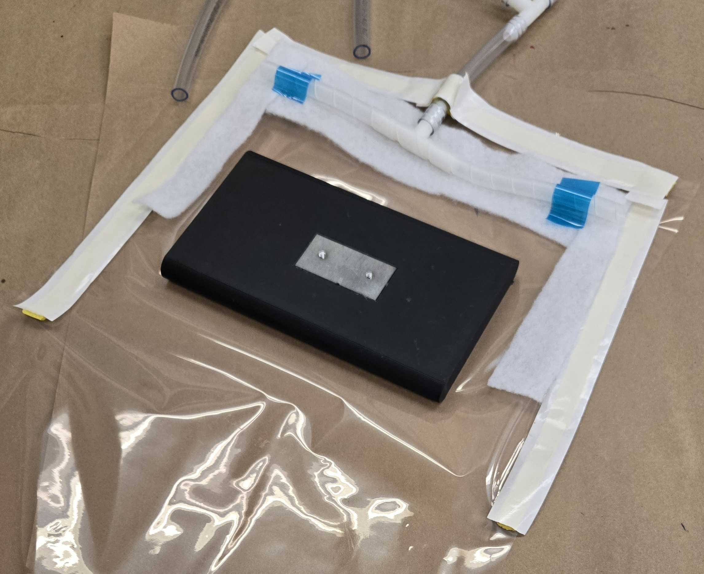
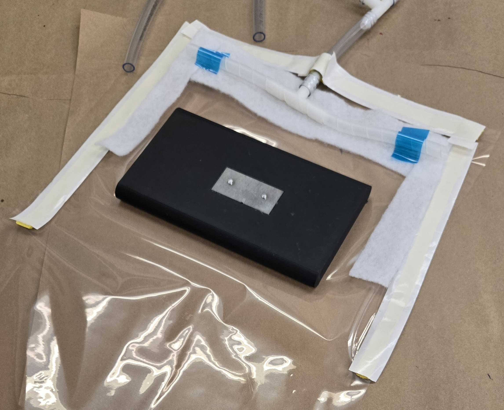
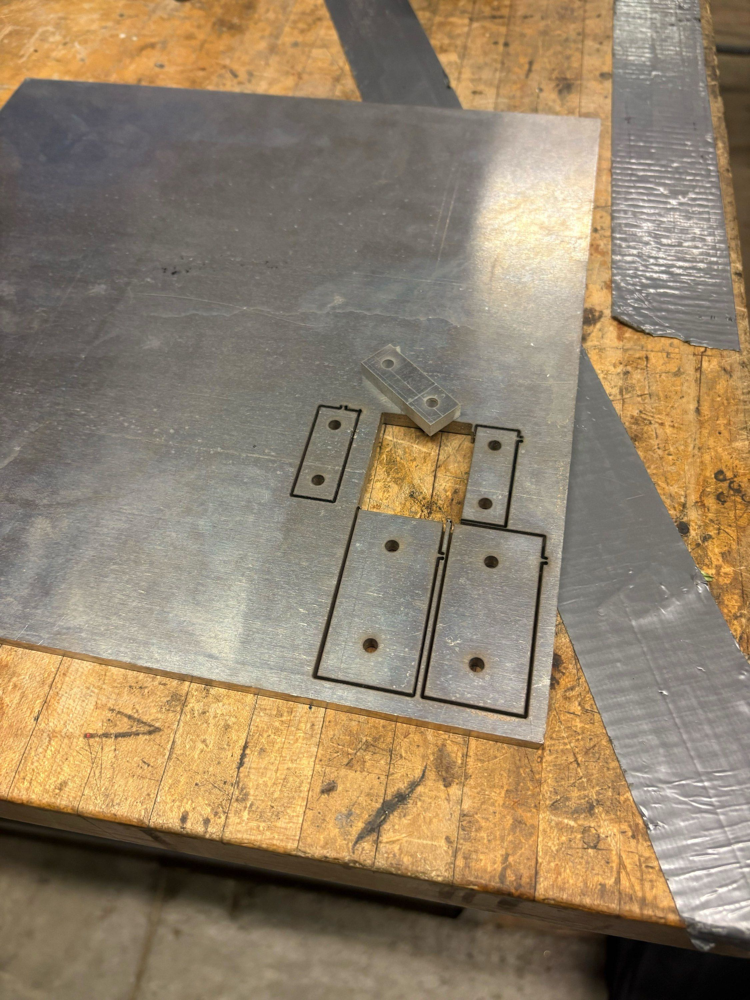

Closed-Cycle Cryogenic System (4 K)
Developed a helium-based cryocooler system reaching sub-4 K temperatures with custom thermal links, vibration isolation, and a vacuum-sealed optical chamber for spectroscopic research.

438-503-0688 | chakib.belghait@uwaterloo.ca | LinkedIn
I am a Mechanical Engineering student at the University of Waterloo passionate about aerospace systems, thermal design, and applied research. Over the years, I have always stayed close to engineering. I participated multiple times in FIRST with my high-school robotics team. I also participated in a research project at Concordia University. I worked with mechanical, aerospace, electrical, and software systems during my projects. I love conceptualizing and realizing new things, whether it is through CAD, FEA simulations, or manufacturing and assembling.
Beyond the classroom, I actively challenge myself in competitive arenas: I ranked 16th in Quebec in the U18 chess category in 2024, competed in over 10 provincial and national karate championships, and enjoy playing soccer and fishing. These experiences have sharpened my strategic thinking, discipline, and problem-solving skills, which I bring into every engineering project I tackle.
Developed a helium-based cryocooler system reaching sub-4 K temperatures with custom thermal links, vibration isolation, and a vacuum-sealed optical chamber for spectroscopic research.
Researched and prototyped advanced techniques for bonding carbon fiber to metal components, using 3D-printed mock airfoils and composite layups to optimize aerodynamic assembly strength.

Developed an innovative financial analytics platform that provides real-time insights and predictive modeling for investment decisions using machine learning algorithms and financial data APIs as part of the 2025 Datathon.

This research project was conducted at Concordia University, under the supervision of the physics department chair: Valter Zazubovits. The goal was to design an devlopp a system that could reach 4K for long time ranges as an alternative for liquid helium. This project was part of a bigger research on Light-Harvesting complexes and their application in bio-solar technologies. The cryogenic system involved a Sumitomo RDK-415D cryocooler with gold-coated copper links, vacuum-sealed aluminum chambers, and G10 supports for stability.
Material structures, Material Analysis, Thermodynamics, Machining, Gold plating, Wiring, Vacuum systems, Assembly, Documentation, Heat transfer, Schematic reading, Teamwork
The system architecture was developed around a modular closed-cycle cryogenic configuration integrating mechanical, thermal, and optical subsystems. A Sumitomo RDK-415D cold head serves as the central cooling unit, connected to a CSW-71C helium compressor through high-pressure lines operating in a sealed loop. The cold stages are thermally linked to the optical sample chamber via gold-coated OFHC copper links. The assembly is enclosed within a vacuum-sealed aluminum housing fitted with a low-emissivity radiation shield extending from the first stage of the cryocooler. The sample chamber is linked at the end of the system. Also two stainless-steel bellows isolate the cryostat from external vibrations. All components are mounted on a rigid optical table.
Several upgrades were introduced to improve the system's performance, stability, and control. A radiation shield was added to reduce radiative heat transfer and keep the cold stages stable at cryogenic temperatures. The thermal links and contact surfaces were gold-coated to improve thermal conductivity and area of contact. The entire setup was sealed inside a vacuum chamber to eliminate convective losses and maintain uniform temperature over time. Dual bellows and a revised mounting structure helped reduce mechanical vibration, while an integrated heater and temperature sensors provided finer control during operation. Together, these improvements improved the cooling efficiency, reliability, and overall performance of the closed-cycle cryogenic system by 21%.
The system design relied on three main materials, each chosen for its specific thermal and mechanical properties at cryogenic temperatures. Gold-coated high-purity OFHC copper was used for the thermal links due to its excellent heat conductivity, allowing efficient transfer from the cold head to the sample chamber. G10 fiberglass epoxy was selected for the chamber supports because of its very low thermal conductivity and minimal contraction when cooled, ensuring mechanical stability without introducing heat leaks. Aluminum 6061-T6 was used for the vacuum housing while Aluminum 6063-T5 was used for the radiation shield. This choice offered the structural strength for the vacuum housing while allowing high thermal conductivity around 40–50 K for the radiation shield which helped distribute and dissipate intercepted heat evenly. Together, these materials provided an optimal balance between thermal management, insulation, and mechanical reliability in the 4 K operating range.
Carbon Fiber is a unique material that is very hard to work with. Most of the parts of the Formula elctrcic car are recovered by this composite. This project aimed at finding new ways to optimise the joining methods between aluminium and Carbon Fiber mainly in the airfoil. This project was done with the aerodynamics sub-team.
Composite Manufacturing, Material Testing, SolidWorks, AutoCAD, Prototyping, 3D-printing, Structural Analysis
The mountings for the joining block (immitation of airfoils) were designed on solidworks and 3D printed using BambuLab. 1-1 replicas of these blocks were designed on AutoCAD and waterjetted. This was made to replicate 3 different joining options and perform strngth and structural tests.
 

For this project, a lot of manifacturing and assembling techniques and tools were used. We used 3D printing for the airfoil or aother car part replicas. These pieces were then recovered in resin and carbon fiber (vaccum at the end to dry and remove the extra resin). The blocks were made out of a 1/4" aluminium sheet that was waterjetted.
This part is still on-going so there are no current results. However, after assembling the prototypes, various strength, aerodynamics and structural tests will be conducted. We will then compare the result and take a desision of potential future applications and implementations.

This project was part of the 2025 Dathaton organised by Polythechnique Montréal and AWS. The goal was to create a platform that will aid investors to comprehend complex financial laws, texts and reports, and visualize the direct impacts on their Portfolio, using an AI agent. The software was expected to give simple and consise insight while also propsing forecasts and risk mitigation. The event lasted 36 hours in teams of 2-4.
HTML, Machine Learning, Data Analysis, API Integration, Python, Algorithm Development, Teamwork
The platform architecture was designed around a scalable Python backend capable of integrating multiple financial data sources through RESTful APIs. This approach was selected as it allows seamless aggregation of heterogeneous market datasets while maintaining flexibility for future expansion. Data processing pipelines were implemented within this framework to automatically clean, normalize, and analyze real-time financial streams. This design enables the predictive modeling module to operate on consistent, high-quality inputs, ensuring reliable insights and faster adaptation to market fluctuations.


FinSight incorporates Google Gemini as the core of the Python backend. This AI agent was the best option for this project as compared to most other LLMs that primarily handle text, Gemini natively integrates multiple data types. Also, the FLASK library was improted to the python backend to create a direct connection with the user imputs conducted throught the HTML frontend. Finally, a memory system was added to the software, allowing th AI agent to keep long term memories of the document sent by the user and optimising the answers generated.
The UI was made using a mix of HTML, CSS, and Java Script. The platform launches with a home page that includes the name of the software and some background animation followed by a smooth transition made with JS. This transition leads to another interface where the user can upload documents of any types which are sent to the python backend. Another interface with the AI analysis and a text box opens to the user allowing him to write his own prompts. The pages are linked in the HTML code allowing smmoth transitions to one another.


Feel free to reach out for collaboration opportunities or to discuss engineering projects!